Last Updated: 2025-01-28
YugabyteDB Aeonとは？
YugabyteDBはクラウドネイティブなアプリケーションに最適な、100%オープンソースの分散SQLデータベースです。分散SQLとは、従来のデータベースが単一ディスクへの書き込みを前提としたモノリシックなアーキテクチャだったのに対し、分散アーキテクチャ、つまり複数ノードへの書き込みや読み取りを前提とした様々な仕組みを提供しています。
このハンズオンで使用するYugabyteDB Aeonは、YugabyteDBをコアコンポーネントのデータベースとして使用している、フルマネージドのサービスです。サーバーやクラウドのアカウントを事前に準備しなくても、すぐにYugabyteDBをサービスとして使用することができます。
ハンズオンで学習すること
- YugabyteDB Aeonのコンソール操作
- YugabyteDB Aeonでのクラスタ作成
- YugabyteDB AeonのWebコンソールを使用したデータベースの操作とタブレットの確認
- YugabyteDB Aeonクラスタの耐障害性とスケーラビリティ
ハンズオンで実施すること
このハンズオンでは、YugabyteDB Aeonの環境を使用して以下の内容を実施します。
- YugabyteDB Aeon クラスタの作成 (シングルリージョン + 複数のAZの構成)
- PostgreSQLとの互換性の確認 (例: テーブル作成、データ挿入、クエリ実行)
- タブレットの確認
- ワークロード・シミュレータを使用した、ノード停止やクラスタのスケールアウト
ハンズオン実施に必要なもの
- YugabyteDB Aeonアカウント
- ハンズオン実施端末のグローバルIPアドレス (クラスタへのホワイトリスト登録のため)
- Java (バージョンがJava 19以上)
YugabyteDB AeonはフルマネージドのDBaaS (データベース・アズ・サービス）です。サインアップしてアカウントを作成することで、すぐにデータベースを使い始めることができます。初めてYugabyteDB Aeonを使用する方は、以下の手順に従ってアカウントを作成してください。
- ブラウザで こちらにアクセスし、アカウントを作成してください。
- 入力したEメールアドレス宛に、確認のメールが届きます。[Finish Signup] ボタンをクリックしてください。

- 必要事項を入力し、アカウントの作成を完了してください。

- アカウント作成が完了後、 ログイン画面に遷移します。上記で設定したユーザーIDとパスワードでログインしてください。

- ログインが成功したら以下のような画面が表示されます。
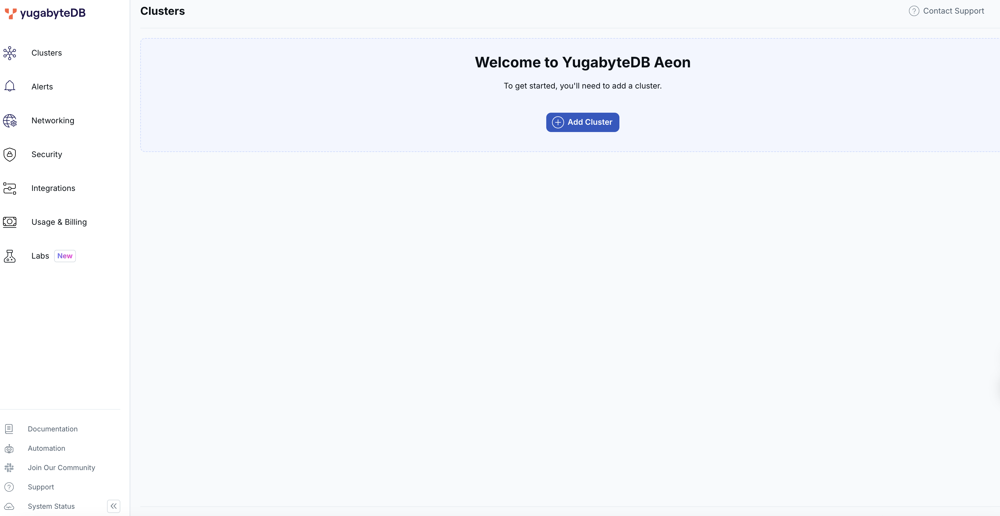
以上で、YugabyteDB Managedへのログインは完了です。
YugabyteDB Aeonでは、UIの項目選択によってクラスタ構成やノード仕様を設定することができます。
以下のような項目を設定します：
- クラウド・プロバイダー（AWS, Azure, GCP）
- データベースのバージョン（Production Track/Innovation Track）
- シングル・リージョンかマルチリージョンか
- 耐障害性のレベル
- なし
- ノードレベル
- AZレベル
- データの分散方法（マルチリージョン・クラスタのみ）
- マルチリージョン・クラスタ
- ジオ・パーティショニング

このハンズオンでは、シングル・リージョンにAZレベルの耐障害性をもつクラスタを作成します。
ここではAWS東京リージョンの各アベイラビリティ・ゾーンにノードを配置して、ゾーンレベルの耐障害性をもつ3ノードクラスタを構成します。
- 左側のメニューから [Clusters] を選択し、 [Create Cluster] ボタンをクリックしてください。

- クラスタ作成のウィザードが開始します。右側のDedicatedにある [Choose] ボタンをクリックしてください。

- General settingsページが表示されます。クラスタの名前には適当な名前が自動生成されます。今回は [test-cluster] と名前を入力します。また、クラウド・プロバイダーには [AWS] 、データベース・バージョンはより新しいバージョンである [Innovation Track] を選択して、 [Next] をクリックしてください。
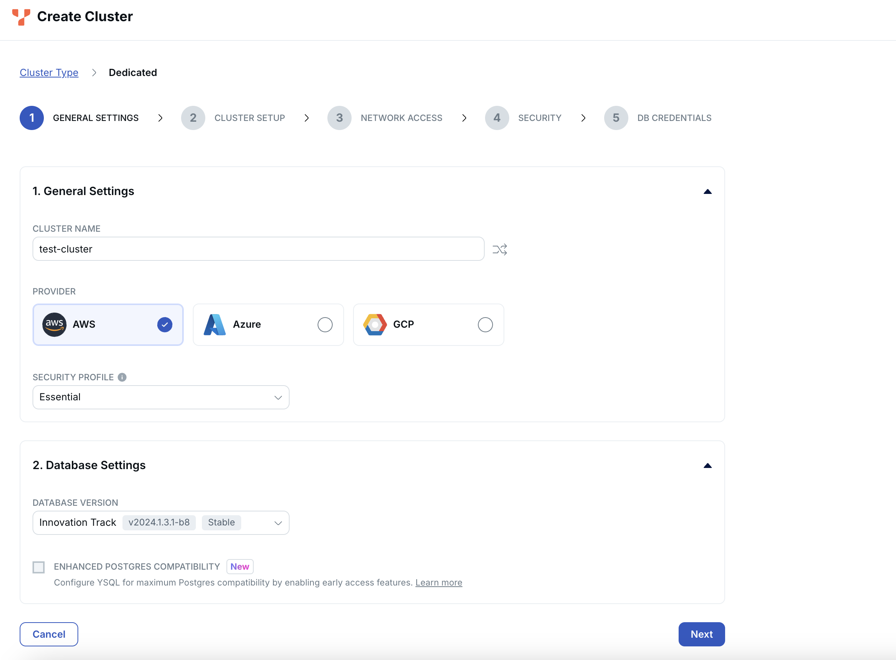
- Cluster Setupページが表示されます。ページ上部にある [Single-Region Deployment] を選択します。1の耐障害性レベルには [Availability Zone Level] 、2のリージョンには [Tokyo] を選択してください。 クラスタの仕様は、vCPUを最小の [2] に設定します。
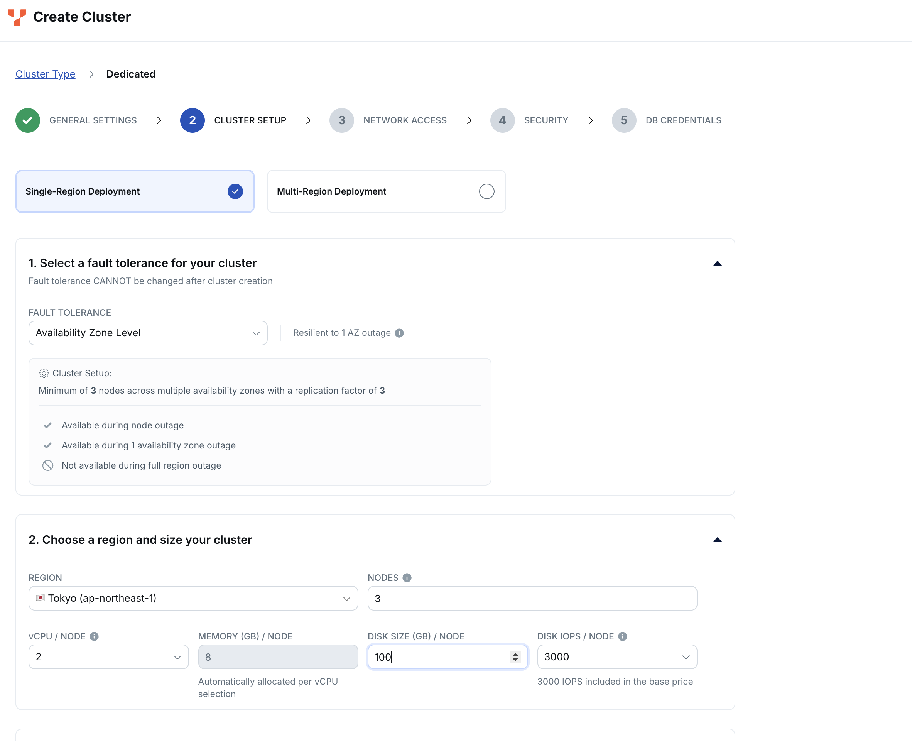
- Cluster setupページの下部には、VPCの設定を行う箇所があります。このハンズオンでは使用しませんので、[Select a VPC] をオフにしたまま、[Next] をクリックしてください。
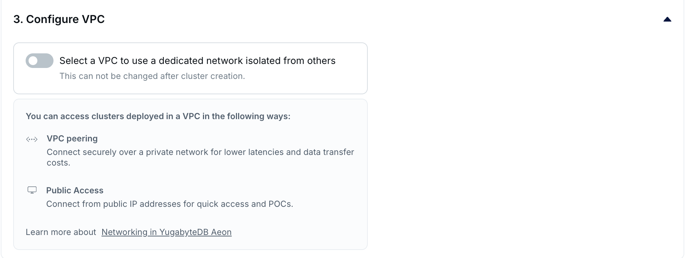
- Network Accessの設定ページが表示されます。[Add Current IP Address] をクリックして、自分の端末のIPアドレスをアクセス許可リストに追加してください。

- [Next] をクリックします。保管データの暗号化の設定を行うページが表示されます。今回は使用しないため、そのままで [Next] をクリックしてください。

- DB Credentialsページが表示されます。ユーザー名とパスワードは自動設定されます。設定をカスタマイズしたい場合は、 [Add your own credentials] をクリックしてユーザー名をパスワードを自分で設定します。このままで問題なければ [Download credentials] ボタンをクリックして、アクセス情報のファイルをローカルに保存してください。
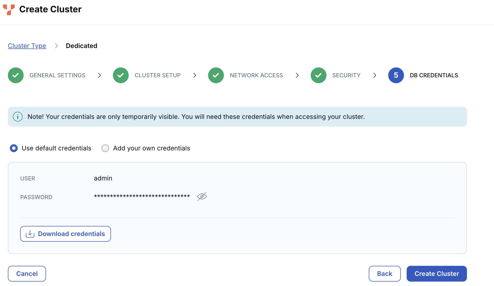
- [Create Cluster] ボタンをクリックします。プロビジョニングが開始され、DBクラスタが開始するまでに数分かかります。
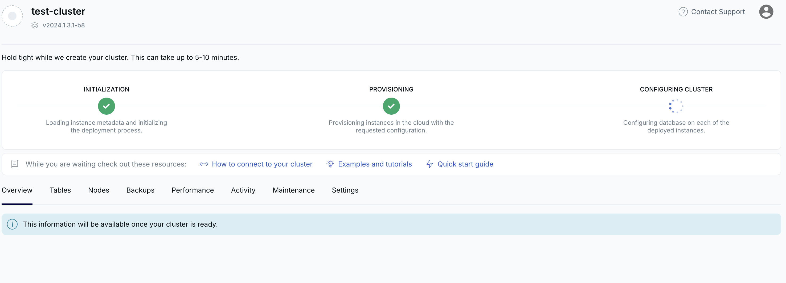
- 起動が完了するとクラスターのダッシュボードが表示されます。

以上で、クラスタの作成は完了です。
YugabyteDB Aeonのクラスタにアクセスするには、いくつかの方法があります。
- Cloud Shell （ブラウザベースのCLI）
- YugabyteDB Client Shell (MacやLinuxのターミナル、またはDockerを使用するCLI）
- その他のデータベース・クライアントアプリケーション (pgAdmin, DBeaverなど）
このハンズオンでは、Cloud Shellを使用したアクセスを行います。
- 前のステップで作成したクラスタのダッシュボードを開きます。
- クラスタのダッシュボードの右上にある、[Coneect]ボタンをクリックしてください。
- クラスタに接続するための方法が複数表示されます。一番上にある[Launch Cloud Shell]ボタンをクリックしてください。

- データベース名やユーザー名を確認し、[Confirm]ボタンをクリックしてください。

- 新しいブラウザ・タブが開き、クラスタにアクセスするためのシェルが表示されます。クラスタ作成時にダウンロードしたcredentialファイルに記載された、パスワードを入力してください。
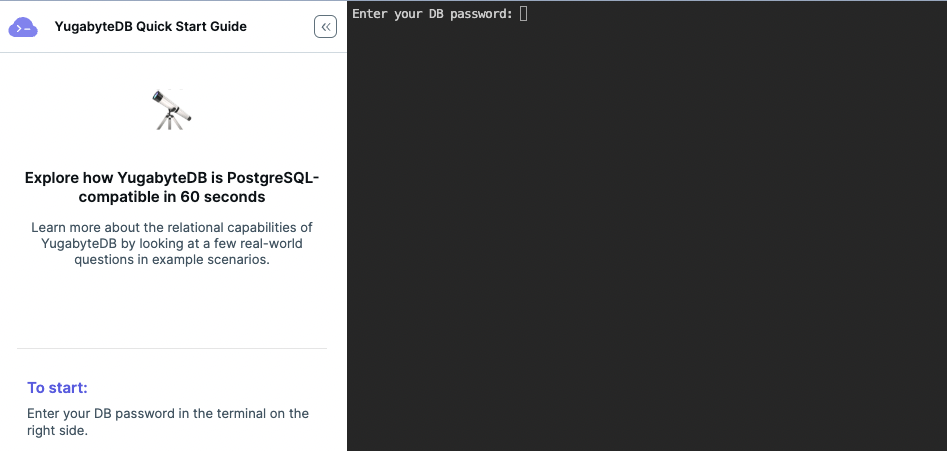
- パスワードが認証されると、あらかじめ作成されたyugabyteデータベースに接続し、YSQLの入力モード (yugabyte=>) になります。
これで Cloud Shell からクラスタにアクセスすることができました。
YugabyteDB Managedでは、初めて使用する開発者向けのチュートリアルが提供されています。ここでは、チュートリアルのガイドにそって、前のステップで接続したyugabyteデータベースにテーブルを作成します。
- 前のステップでyugabyteデータベースに接続した、Cloud Shellのブラウザ・タブが開いていることを確認してください。
- 左側に表示された[YugabyteDB Quick Start Guide]から、[Step 1. Create a Table]をクリックしてください。チュートリアルの手順がCloud Shellの下側に表示されます。

- Step1では、部門(dept)テーブルを作成します。テーブルを作成するSQLをCloud Shellに直接入力するか、SQLのボックス右上にある[Copy]ボタンをクリックして貼り付ける、もしくは、[Run]ボタンをクリックして、SQLを実行してください。[CREATE TABLE]のメッセージが表示されたことを確認します。

- 同様に、Step2では従業員(emp)テーブルを作成します。[CREATE TABLE]のメッセージを確認してください。

- チュートリアル手順の上部にある[Next Step >]ボタンをクリックするか、左側のガイドから[Step 2. Insert Data]をクリックして、データを挿入する手順を表示します。
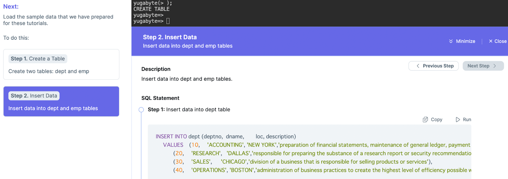
- 部門(dept)テーブルにデータを挿入します。[Step1]に表示されたSQLを実行してください。4行のデータが挿入され、[INSERT 0 4]のメッセージが表示されます。
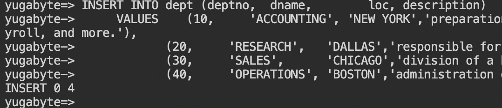
- 同様に、従業員(emp)テーブルにデータを挿入します。[Step2]に表示されたSQLを実行してください。14行のデータが挿入され、[INSERT 0 14]のメッセージが表示されるはずです。

- 改めて、部門(dept)テーブルと従業員(emp)テーブルにデータが挿入されたことを確認します。これでテーブル作成とデータ挿入のステップは完了です。

- データの挿入が完了すると、右側のウィンドウにチュートリアルへのリンクが表示されます。[Let's get started with the tutorials ->]をクリックしてください。

- 左側ウィンドウにYSQLのチュートリアルが表示されます。先ほど作成したテーブルを使用して、Join(テーブル結合)やプリペアドステートメントなどの機能を試してみましょう。
- [Scenario 1. SQL Updates]をクリックします。こちらでは、JobがManagerではない従業員に対して現在の給与(sal)に100を加算し、給与額の値を更新します。

- [Scenario 2. Join]をクリックします。こちらでは、empテーブルを自己結合し、Managerより給与が高い社員を抽出するクエリを実行します。
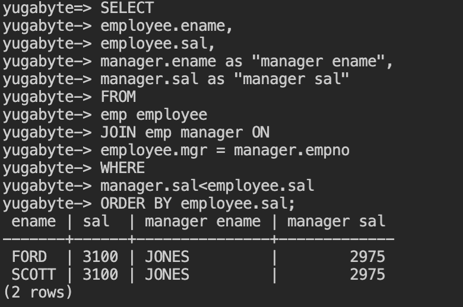
- [Scenario 3. Prepared Statements]をクリックします。こちらでは、社員番号をパラメータとして受け取り、従業員(emp)テーブルから名前(ename)と給与(sal)を返すプリペアドステートメントを作成します。

- PREPAREという応答が返ったことが確認できたら、
execute emp_territories(7900);のようにパラメータに従業員番号(例: 7900)を入れて実行してみてください。下記の様に、従業員番号7900の社員の名前と給与が返ってきたことが確認できます。

- プリペアドステートメントは、セッション内に限り有効で、他のユーザーと共有することはできません。使用しなくなったプリペアドステートメントは無効化することでメモリを解放することができます。
deallocate emp_territories;と入力して作成したステートメントを削除してください。
- 他にも再帰クエリなど、先ほど作成したテーブルを使用して、様々なSQL機能を試すことができます。このハンズオンでは実施しませんが、お時間のある時に是非試してみてください。


YugabyteDBは、テーブルデータを「タブレット（tablet）」または「シャード（shard）」と呼ばれる小さな単位に分割します。また、シャーディング（Sharding）とは、大規模なテーブルを「シャード」と呼ばれる小さな断片に分割し、それらを複数のサーバーに分散させるプロセスを指します。主にレンジシャーディング（range sharding）とハッシュシャーディング（hash sharding）をサポートしています。

まず、下記のSQLを実行し、empテーブルの情報を確認します。
yugabyte=> \d+ emp;
出力結果を確認すると、下記のとおりempnoがプライマリキーとして設定されています。また、empno列の値に基づいてハッシュ関数が計算され、その結果によってデータが異なるシャードに分散されるハッシュシャーディングが使用されています。

ここで、下記のSQLを実行します。num_hash_key_columnsは上記のとおり、ハッシュキーとして設定されているプライマリキーの数を示しており、ハッシュシャーディングによって、empテーブルのデータが3つのタブレット(num_tablets)に分散されていることが確認できます。ハッシュシャーディングを使用することで、データが均等に分散され、特定のタブレットにデータが集中することを防ぎ、パフォーマンスの向上とスケーラビリティの確保が図られます。
yugabyte=> SELECT * FROM yb_table_properties('emp'::regclass);

また、YugabyteDB AeonではReplication Factor（レプリケーションファクター）が3に設定されています。今回3つのノードを作成したため、各タブレットは3つのノードにコピーされます。1つがリーダー（Leader）で、残りの2つがフォロワー（Follower）です。

これで、テーブルのタブレットに関する状況を確認できました。
分散SQLデータベースの高可用性と耐障害性
分散SQLデータベースであるYugabyteDBは、拡張性（水平スケール）や高可用性を前提とした設計となっており、デフォルトで高い耐障害性を備えています。スケール時にもサービス停止は発生せず、ローリング・アップグレードといったゼロダウンタイムでのオペレーションが可能です。
このハンズオンでは、YugabyteDB Aeonを使用して、ノード障害やクラスタのスケール時にもダウンタイムが発生せず、クラスタが処理を継続できることを確認します。
クラスタのアクセス情報の確認
このハンズオンでは、ワークロード・シミュレータを使用したノード停止やクラスタのスケールアウトを実施します。こちらの実施にあたり、いくつかの情報やファイルが必要となります。このセクションでは、以下の情報を確認します。
- データベースのユーザー名とパスワード
- 作成したクラスタのID
- YugabyteDB ManagedのアカウントID、プロジェクトID
- YugabyteDB Managed REST APIを使用するためのAPI Key
- クラスタのダッシュボードを開きます。
- クラスタのダッシュボードの右上にある、[Coneect]ボタンをクリックしてください。
- クラスタに接続するための方法が複数表示されます。一番下にある[Connect to your Application]の右向き矢印をクリックします。

- SSL通信のための証明書をダウンロードします。[Download CA Cert]のリンクをクリックして、証明書ファイル (root.crt) をダウンロードしてください。

- [2)Use the following parameters to connect to your cluster]セクションの下で、YSQLの[Parameters]タブを選択します。[Host] の横にあるコピーボタンをクリックしてメモしてください。ホスト名は、<Region>.<ClusterID>.<Cloud>.ybdb.io で設定されています。最初の.(ドット) の後の文字列(上の例では、4e095914-fb49-4b71-8e3a-3dee1073f221)が、クラスターIDです。

- 右上にあるXをクリックして、[Connect to Cluster]のウィンドウを閉じます。
- 左側のメニューから、[Security]を選択します。[API Keys]タブを選択して、[Create API Key] ボタンをクリックしてください。

- API Keyの名前に任意の名前を入力します。Roleは[Admin]を選択し、[Generate Key]ボタンをクリックしてください。

- APIキーが表示されます。キーはこの画面でしか表示されないので、必ずキーをコピーしてメモしてください。
- [View Details] セクションを開くと、アカウントIDとプロジェクトIDが表示されます。この2つもコピーして、メモしておいてください。

これで、クラスタへのアクセスに必要な情報が確認できました。
YB Workload Simulatorは、アプリケーションから見たレイテンシやスループットをシミュレートするJavaアプリケーションで、YugabyteDBのコードサンプルとして GitHubで公開されています。
シミュレータを使用することで、以下のことを実施できます。
- ワークロード実行のためのテーブルを作成/ドロップ
- ワークロード実行のためのデータをロード
- TPSやJavaのスレッド数を調整してワークロードを実行
- クラスタのトポロジーを可視化
- YugabyteDB Managedのオペレーション（ノード停止/再開、クラスタのスケール）
- リリースページにアクセスして、シミュレータのjarファイルをダウンロードしてください。今回は、 yb-workload-sim-0.0.7.jarを使用します。
- 前のステップでダウンロードしたクラスタのアクセス情報、証明書、アカウントIDやプロジェクトID、API Keyを確認して、以下のコマンドを入力します。
java -Dnode=<host name> \
-Ddbname=<dbname> \
-Ddbuser=<dbuser> \
-Ddbpassword=<dbpassword> \
-Dssl=true \
-Dsslmode=verify-full \
-Dsslrootcert=<path-to-cluster-certificate> \
-Dybm-api-key=<ybm-api-key>
-Dybm-account-id=<ybm-account-id> \
-Dybm-project-id=<ybm-project-id> \
-Dybm-cluster-id=<ybm-cluster-id> \
-jar ./yb-workload-sim-0.0.7.jar
<host name> | クラスタの接続情報で確認したホストのアドレス(例)asia-northeast1.4e095914-fb49-4b71-8e3a-3dee1073f221.gcp.ybdb.io |
<dbname> | yugabyte |
<dbuser> | クラスタのアクセス情報(<cluster_name>.txt)ファイルに記載(例) admin |
<dbpassword> | クラスタのアクセス情報(<cluster_name>.txt)ファイルに記載 |
<path-to-cluster-certificate> | クラスタの接続情報でダウンロードしたroot.crtファイルへのパス |
<ybm-api-key> | Adminメニューで生成したAPI Key |
<ybm-account-id> | API Key生成時に確認したアカウントID。管理コンソール右上のユーザーアイコンからも確認可能 |
<ybm_project-id> | API Key生成時に確認したプロジェクトID。管理コンソール右上のユーザーアイコンからも確認可能 |
<ybm-cluster-id> | ホスト名のリージョンの後にある、クラスタのUUID(例) 4e095914-fb49-4b71-8e3a-3dee1073f221 |
- シミュレータが実行されると、以下のようなアスキーアートが表示されます。

- ブラウザを開いて、 http://localhost:8080/ にアクセスしてください。シミュレータが表示されます。

- [Network Diagram and Aggregate Statistics]ウィンドウの右上にある、歯車アイコンをクリックし、[Yugabyte Options] を選択してください。

- パスワードの設定を要求する画面が表示されます。任意のパスワードを設定し、メモしておいてください。[OK]ボタンをクリックして、一度ウィンドウを閉じます。
- 再度、歯車アイコンをクリックして[Yugabyte Options]を選択し、[Database in Use]に[Yugabyte Managed]を選択します。パスワードの入力を求められたら、先ほどのパスワードを入力し[Validate Password]をクリックしてください。
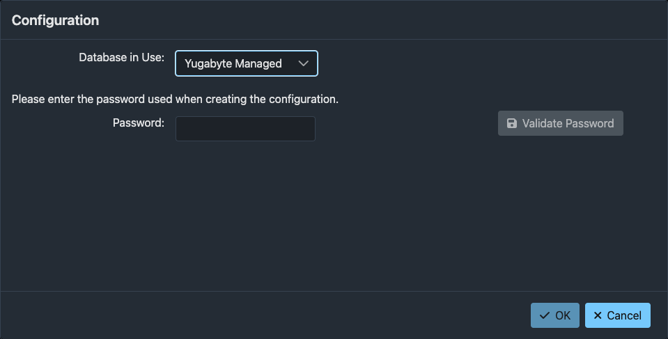
- API Access KeyやアカウントIDを入力する画面が表示されます。メモしておいた内容を入力し、[OK] ボタンをクリックしてください。

- 設定が保存されると、ネットワーク図の下にクラスタを操作するボタンが表示されます。
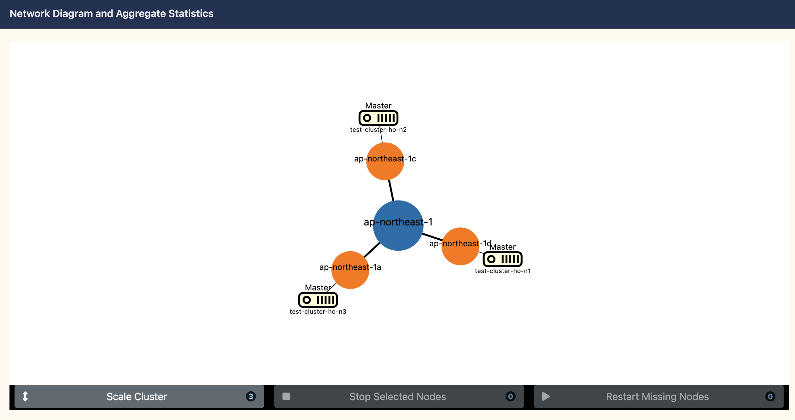
ワークロード・シミュレータでは、シミュレーションを実行するためのテーブルやデータを生成する機能を提供しています。
- シミュレータの左上にある、ハンバーガーアイコンをクリックしてください。

- [Workload Management for Quickship]ウィンドウが開きます。[Usable Operations]タブを表示してください。

- [Create Tables]セクションを開き、 [Run Create Tables Workload]ボタンをクリックしてください。"Workload CREATE_TABLES successfully submitted"のメッセージがウィンドウ下部に表示されます。
- YugabyteDB Managedのコンソールで、クラスタのダッシュボードの[Tables]タブを表示し、ProductsとOrdersの2つのテーブルが作成されていることを確認します。
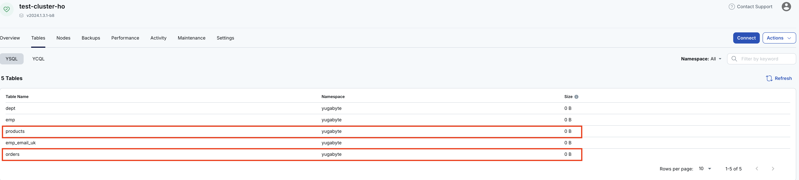
- シミュレータ画面に戻り、[Workload Management for Quickship]ウィンドウを開きます。
- [Seed Data]セクションを開き、[Run Seed Data Workload]ボタンをクリックしてください。"Workload SEED_DATA successfully submitted."のメッセージがウィンドウ下部に表示されます。
- YugabyteDB Managedのコンソールで、実際にデータがロードされたことを確認してみましょう。クラスタのダッシュボード右上にある[Connect]ボタンをクリックし、表示されるウィンドウで[Launch Cloud Shell]をクリックします。
- データベース名やユーザー名を確認し、[Confirm]ボタンをクリックしてください。
- 新しいブラウザ・タブが開き、クラスタにアクセスするためのシェルが表示されます。クラスタアクセス情報のファイルに記載された、パスワードを入力してください。
- パスワードが認証されると、YSQLの入力モードになります。
SELECT count(*) from orders;と入力し、エンターキーを押してください。10000行のデータがロードされていることがわかります。

- 続いて、データの一部を参照するため、
SELECT * from orders limit 10;と入力してください。ロードされたデータの内容を確認したら、exit;と入力してシェルを終了し、タブを閉じます。
シミュレータで作成したテーブルとデータを使用して、YugabyteDB Managedのクラスタに読み取り/書き込みのワークロードを実行します。
- ワークロード・シミュレータのブラウザ・タブを開き、左上のハンバーガーアイコンから[Workload Management for Quickship]ウィンドウを表示してください。
- [Simulation]セクションで、スループットとスレッドの設定を確認します。読み取りだけでなく、書き込みのワークロードも生成するため、[Include placing of new orders]のボタンをオンにして、[Run Simulation Workload]ボタンをクリックしてください。

- "Workload RUN_SIMULATION successfully submitted."のメッセージがウィンドウ下部に表示されることを確認し、[Close]ボタンをクリックしてウィンドウを閉じてください。
- レイテンシーとスループットのグラフを確認してください。ワークロードが継続的に生成され、データベースがサービスを継続していることがわかります。

このハンズオンの前のステップで、複数のアベイラビリティゾーン(AZ)にノードを配置したクラスタを構成しました。そのため、AZレベルの障害であれば、クラスタは影響を受けずにサービスを継続することができる耐障害性を備えています。
このセクションでは、クラスタを構成する一つのノードを停止することでAZレベル障害を想定したシミュレーションを行います。
- 前のステップで実行したワークロードのシミュレーションが継続していることを確認してください。
- シミュレータのネットワーク図で、任意のノードを選択します。（選択されたノードがは赤色になります。）ネットワーク図の下にある[Stop Selected Nodes]ボタンをクリックしてください。

- 確認ウィンドウが表示されたら、[Yes]をクリックしてください。

- パフォーマンスを表示するグラフでは、数秒のレイテンシ増加とスループット停止が発生します。これはRaftコンセンサスを行うタブレット・ピアが新しいリーダーを選択し、処理を再開するまでのタイムラグです。また、ネットワーク図からは停止したノードが消えて2ノード構成になったことがわかります。

- YugabyteDB Aeonのコンソールでの表示も確認しましょう。ダッシュボードの[Node] タブを表示すると、1つのノードが停止していることを示す赤い警告アイコンが表示されています。一方で、クラスタ自体はサービスを継続しているため、緑色のハートアイコン(Cluster Healthy and Fully Operational)が表示されています。

- シミュレータに戻り、ネットワーク図の下にある[Restart Missing Nodes]ボタンをクリックしてください。確認ウィンドウが表示されたら、[Yes]をクリックします。

- ノードの再起動とデータの同期には数分かかります。ノードの準備が整うと、タブレットの再配置とリーダー選挙が行われ、再起動したノードがネットワーク図に表示されます。

以上で、ノード停止によるAZ障害のシミュレートは完了です。クラスタ構成が変更される時に数秒のパフォーマンス低下が発生しますが、1つのノードが失われてもクラスタとしてはサービスが継続できることが確認できました。
前のステップでは、ノード停止をシミュレートしました。ここでは、ワークロードが増加した時にクラスタをスケールアウトしたり、スケールインするオペレーションを行います。
- 前のステップで実行したワークロードのシミュレーションが継続していることを確認してください。
- クラスタへのリクエストが増加したことをシミュレートするため、追加のワークロードを実行します。左上にあるハンバーガーアイコンから、[Workload Management for Quickship]ウィンドウを開き、[Include placing of new orders]のオプションをオフにしてから[Run Simulation Workload]ボタンをクリックしてください。

- [Active Workloads]タブを表示すると、２種類のワークロードが実行中であることがわかります。[Close]ボタンをクリックしてウィンドウを閉じてください。

- クラスタのノード数変更を、YugabyteDB Aeonのコンソールから実施します。クラスターのスケールアウトをYugabyteDB Aeonの画面から行ってみましょう。クラスタのダッシュボードを開きます。
- 右上にある[Actions]ボタンをクリックして、[Edit Infrastructure]を選択します。(または[Settings]タブの[Regions]セクションの右にある、[Edit Infrastructure]からも可能です。)

- [Nodes]のボックスに表示される上向き矢印をクリックして、ノードの数を6に変更します。

- [Confirm and Save Changes]ボタンをクリックしてください。クラスタの構成変更中であるメッセージが画面上部に表示されます。

- [View Details]ボタンをクリックして、タスクの進行状況を確認してください。
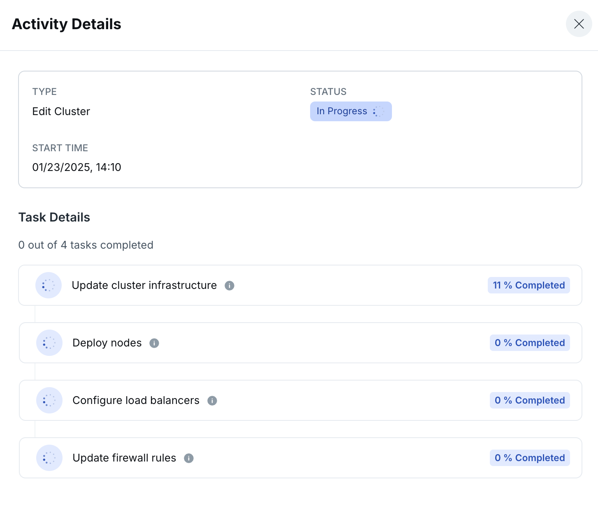
- ワークロードシミュレータでも、ノード削除時のパフォーマンス低下やネットワーク図の変化が観察できることを確認してください。

- ノード数の変更が完了後、YugabyteDB Aeonのコンソールで、クラスタのダッシュボードの[Nodes]タブを表示し、ノードの数が6になっていることを確認してください。

以上で、ワークロード実行中のスケールアウトおよびスケールインのテストは完了です。構成変更時に数秒のパフォーマンス低下が発生しますが、クラスタ全体としてはサービスが継続できることを確認しました。
ここまで実行したワークロードの停止と、クラスタの停止または削除を行います。
- ワークロードシミュレータ画面で、左上にあるハンバーガーアイコンをクリックします。
- [Active Workloads]タブを表示すると、実行中のワークロードのリストが表示されます。ゴミ箱アイコンをクリックして、全てのワークロードを停止してください。
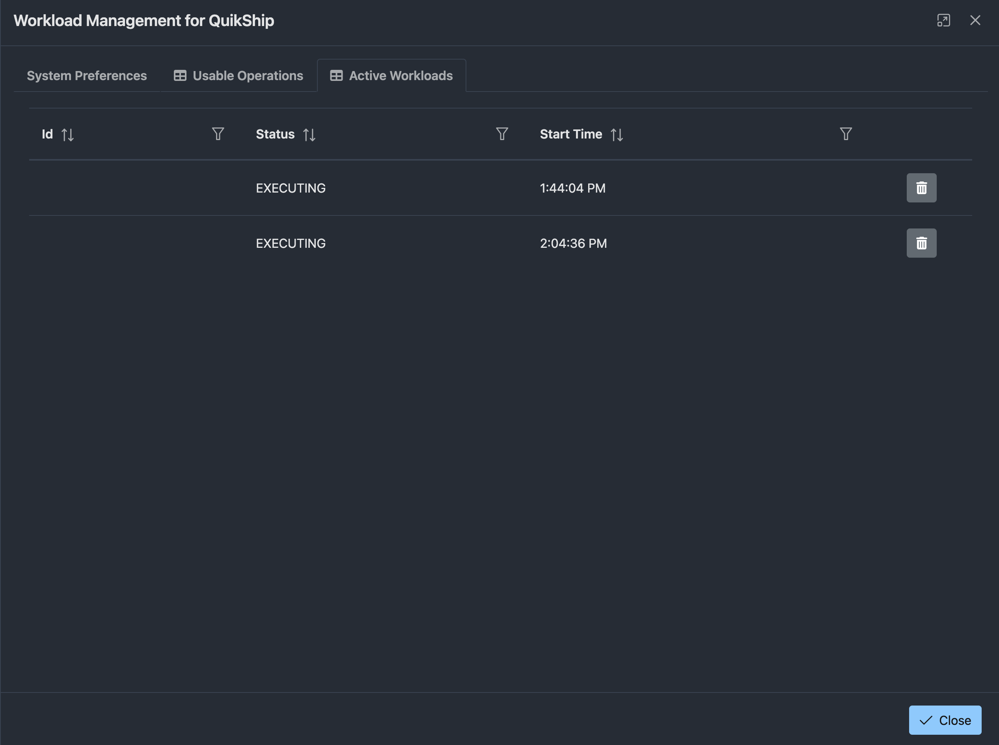
- [Close]ボタンをクリックしてウィンドウを閉じます。
- ワークロードが停止され、パフォーマンスのグラフが表示されなくなったことを確認してください。シミュレータを実行していたブラウザタブを閉じます。
- シミュレータを起動したコマンドツール(Terminal等) に戻り、ctl+Cを入力して、アプリケーションの実行を停止してください。
- YugabyteDB Managedのコンソール画面を開きます。クラスタのダッシュボードで右上にある[Action]ボタンをクリックし、 [Terminate Cluster]を選択してください。
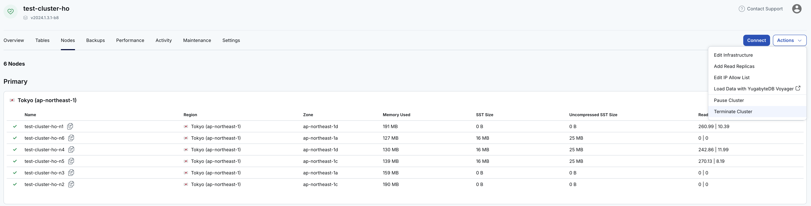
- クラスタ削除の確認画面が表示されます。クラスタの名前を入力して、[Delete]ボタンをクリックしてください。

以上で、環境のクリーンアップは完了です。
このハンズオンでは、YugabyteDB Aeonを使用して、下記の内容を確認しました。
- YugabyteDB Aeonのコンソール操作
- YugabyteDB Aeonでのクラスタ作成
- YugabyteDB AeonのWebコンソールを使用したデータベースの操作とタブレットの確認
- YugabyteDB Aeonクラスタの耐障害性とスケーラビリティ
さらにYugabyte Aeonについて学びたい場合は、下記のリンクをご参照ください。